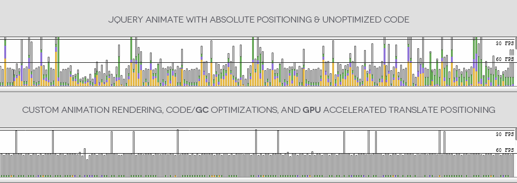

Introduction
Sly is a JavaScript library for advanced one-directional scrolling with item based navigation support.
It can be used as a simple scrollbar replacement, in an advanced item based navigations, or as a great navigation and animation interface for parallax websites. This is achieved by a powerful & developer friendly API that provides a bunch of very useful methods giving you control over everything.
Dependencies
- jQuery 1.7+
And that's it. You don't need 200KB of jQuery-UI to Sly :) In the future, I'd like to drop the jQuery dependency, and transform Sly into a reusable Component.
Compatibility
Sly works in every desktop browser, and due to some divine intervention, even in IE6+, but that is a complete accident. IEs lower than 8 are not officially supported :).
Mobile
Sly does touch events, and I'm generally trying to make it work everywhere, but the fact is that mobile is not tested. If you want to help with that, you are welcome :).
Performance
A lot of emphasis is placed on performance in an attempt to achieve the most responsive experience with smoothest animations possible.
Sly has a custom high-performance animation rendering based around the Animation Timing Interface, which provides an optimized 60 FPS rendering. This is designed to still accept easing functions from jQuery Easing Plugin, so you won't event notice that Sly's animations have nothing to do with jQuery :).
The animation of elements is done by GPU accelerated translate transforms, which rapidly increase the rendering speed in browsers that support it, with absolute positioning fallback for those that don't.
Helping with minimizing the frequency of frame drops due to inevitable JavaScript garbage collection are code optimizations that lower the garbage generation to a reasonable minimum.
To provide a super responsive & smooth synchronization when dragging the scrollbar handle, Sly uses a destination based animation function controlled by a synchronization factor instead of a duration based (tweening) animations that are unsuitable for this type of use case, and lead to a choppy, low performance, and unpolished experience. Another perk of writing your own animation rendering :).
The difference between earlier versions that were using jQuery.fn.animate with unoptimized code and Sly's current state is quite staggering.

Examples
All examples (except the Parallax one) are using a calling via jQuery proxy, because some people that are looking only at examples think that jQuery is a separate language and can't handle raw JavaScript. This hopefully helps with lowering the "help me make it work" issues reports.
More advanced users can surely read the documentation and discover all the power & cool stuff that new Sly() provides :)
Documentation
Documentation is centralized in the Sly's Repository Wiki, which makes it way easier to maintain and keep always up to date.
Forum
If you have a general question about Sly, or having problems with implementation, please do not pollute the Github's Issue tracker, but use the Sly forum dedicated just for that.
I work on this for free in my spare time, so I cannot guarantee that you'll receive a support immediately, but I'll try to do my best to answer your questions.
I also reserve a right to ignore questions that could be solved by spending at least a minute reading the documentation. I've spent more than a day writing it, so every question with an answer that is already thoroughly documented is an insult to me, my ancestors, and makes my hamster curse like a sailor.
If you find the documentation lacking in some ways, that is a great New Issue candidate!